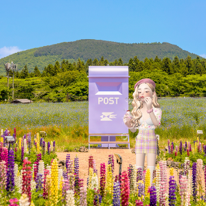

여러분의 제주를 Pick 해보세요
프로여행러 제이티가 Pick한
매력적인 제주 여행지 여기다 있어요.
여행지별 상세 정보부터 제이티의 여행 꿀팁까지!
실제 방문한 여행 사진을 인증하면
제이티 마일리지 적립 +100
상상의 섬 제주에서 마음껏 여행하고,
환상의 섬 제주에서 우리 만나요!
참여 가능 기간 : 2022년 8월 8일(월) ~ 12월 23일(금)


- 


당신의 과수원

9~11월에 오면 귤이 더 달아 맛있는 “당신의 과수원”
#연인과함께 #데이트장소 #주차공간 #펫여행
제이티's 여행 꿀팁
당신의 과수원은 정해진 바구니에 꽉 담아서 귤을 따면 집에 가져갈 수 있어요~ 게다가 바구니를 가장 먼저 채운 사람에게는 보너스 귤을 추가해준답니다!
추천 링크
당신의 과수원을 한 눈에 볼 수 있게 모아봤어요! 과수원이 마음에 든다면 상단의 하트를 꾹! 눌러볼까요?

주소 제주도 제주시 당신의 과수원동
영업시간 09:00 -18:00